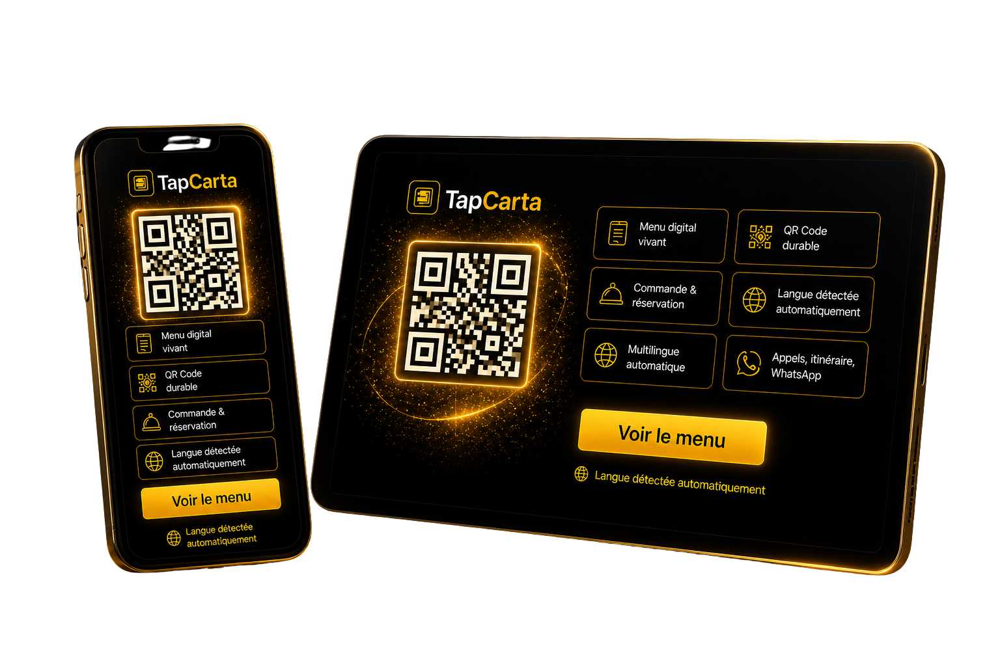

Menu digital vivant
Mettez votre carte à jour et présentez vos plats proprement sur mobile.
Vos clients gagnent en clarté, vous gagnez en efficacité.
TapCarta simplifie tout, du menu à la commande.

Traductions · descriptions · réseaux sociaux · suivi des demandes
Vos clients voient automatiquement votre menu dans leur langue, sans manipulation compliquée. Idéal pour les zones touristiques et les restaurants multilingues.
Une base concrète pour présenter votre restaurant, recevoir des demandes et garder le contrôle sans commission sur vos ventes.
Mettez votre carte à jour et présentez vos plats proprement sur mobile.
Un QR solide, pensé pour durer et évoluer avec votre restaurant.
Le menu s’adapte automatiquement à la langue de vos clients.
Une présence en ligne simple, moderne et efficace.
Recevez les demandes de commande et traitez-les clairement.
Recevez les demandes de réservation avec suivi côté client.
Gérez les demandes entrantes dans un espace restaurateur dédié.
Vous gardez 100% de vos ventes. Aucun frais caché sur les commandes.
Une entrée simple, un pack complet, et une évolution Max annoncée clairement comme prochaine étape.
Une présence minimale pour afficher votre établissement et permettre un contact direct.
Le socle propre pour remplacer une carte papier ou un QR basique.
Menu, réservations, commandes et interface restaurant dans un seul écosystème.
Le visage de TapCarta aujourd’hui, et demain un assistant IA utile pour accompagner le restaurant.
Consultez un tableau simple pour choisir le pack adapté avant de remplir votre demande.
Le client commande ou réserve depuis son téléphone. Le restaurant reçoit la demande dans TapCarta Resto, puis confirme, refuse ou propose une modification claire.
TapCarta prépare une présence progressive des restaurants partenaires, sans transformer cette promesse en argument excessif avant le bon moment.
De plus en plus de restaurants peuvent rejoindre TapCarta.
Vous gardez 100% de vos ventes. Zéro frais caché.
Votre dossier est vérifié avant la mise en place de votre espace TapCarta.
Vos données et celles de vos clients sont traitées avec prudence.
Le parcours reste clair : choix de l’offre, informations restaurant, vérification du dossier, puis mise en place accompagnée.
Light, Standard ou Plus selon le besoin réel.
Identité, coordonnées, horaires, visuels et menu.
Signature en ligne avec conditions claires.
L’offre et les informations sont confirmées avant la mise en place.
QR, menu, accès et accompagnement au démarrage.
TapCarta évolue, mais les fonctions futures restent clairement séparées de ce qui est disponible aujourd’hui.
Traductions assistées, descriptions optimisées et aide au contenu, dans un cadre maîtrisé.
Des outils pour mieux exploiter les retours clients et améliorer la présence digitale.
Préparer des publications utiles à partir des données du restaurant, avec validation humaine au départ.
Envoyez les informations de votre restaurant et nous préparons votre espace TapCarta : offre, menu, QR, accès et accompagnement.